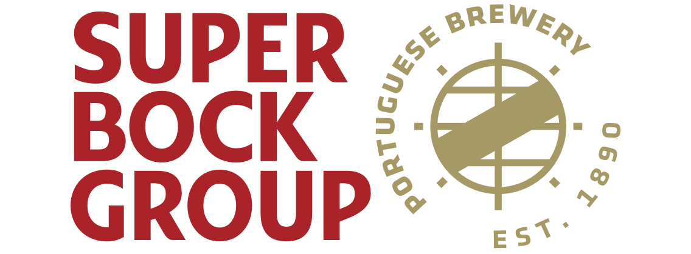

speciality leasing / commercial assistant
Mall Solutions Europe
jun 2019 - nowadays
lisbon, Portugal
Perform contact management, negotiation and administrative
functions. Identify leasing opportunities for a shopping centre based on goals
and merchandising plans. Managing the process, making the deal, follow through
to completion and follow up of the customers’ performance. Dealing with Kiosks,
RMU, Pop-Up and Brand activation businesses.
sales representative
Ticket To The Moon
may 2019 - nowadays
Portugal
Representative in Portugal for the brand “Ticket to the
Moon”. Develop a Portuguese client’s portfolio, participation in fairs
(Nauticampo 2020) and festivals.
sales operation support (export)
Super Bock Group
dec 2017 - dec 2018
Porto, Portugal

Interface with the areas of commercial, information, audit
and financial systems. Contribution to maximize the efficiency of commercial
teams by providing the necessary information for decision-making and
streamlining the flow of information, by superior hierarchical guidelines, to
follow the Super Bock Group's business strategy, information systems and
accounting standards. Reporting, sales forecast, commercial area support, back
office. Participation in Trade Fairs such as ANUGA (Cologne, Germany), SIAL
(Paris, France) and SISAB (Lisbon, Portugal).
outbound sales
Super Bock Group
feb 2016 - dec 2017
Porto, Portugal
Management of the portfolio of international clients with
a
personalized follow-up, prospecting the satisfaction and building sustainable
relationships, creating value for both company and customer, providing a service
of excellence. First screening of potential customers, evaluation of business
proposals and guidance according with the request. Orders registration, problem
solving, sales operation.
area sales manager
Tornado Gas Springs
oct 2012 - oct 2015
Istanbul, Turkey
food engineer
Bísaro Salsicharia Tradicional
jan 2012 - jul 2012
Bragança, Portugal
interpreter/seller
Djewels
2010 - 2011
Antalya, Turkey